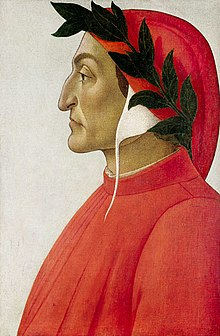

La Comedìa, conosciuta soprattutto come Commedia o Divina Commedia,[1] è un poema allegorico-didascalico[2] di Dante Alighieri, scritto in terzine incatenate di versi endecasillabi, in lingua volgare fiorentina.
Composta secondo i critici tra il 1306/07 e il 1321, anni del suo esilio in Lunigiana e Romagna,[3] la Commedia è l'opera più celebre di Dante, nonché una delle più importanti testimonianze della civiltà medievale, tanto da essere conosciuta e studiata in tutto il mondo, oltre che ritenuta una delle più grandi opere della letteratura di tutti i tempi.[4] Il poema è diviso in tre parti, chiamate «cantiche» (Inferno, Purgatorio e Paradiso), ognuna delle quali composta da 33 canti (tranne l'Inferno, che contiene un ulteriore canto proemiale). Il poeta narra di un viaggio immaginario, ovvero di un Itinerarium Mentis in Deum,[5] attraverso i tre regni ultraterreni che lo condurrà fino alla visione della Trinità. La sua rappresentazione immaginaria e allegorica dell'oltretomba cristiano è un culmine della visione medievale del mondo sviluppatasi nella Chiesa cattolica.
L'opera ebbe subito uno straordinario successo e contribuì in maniera determinante al processo di consolidamento del dialetto toscano come lingua italiana. Il testo, del quale non si possiede l'autografo, fu infatti copiato sin dai primissimi anni della sua diffusione e fino all'avvento della stampa in un ampio numero di manoscritti. Parallelamente si diffuse la pratica della chiosa e del commento al testo (si calcolano circa sessanta commenti e tra le 100.000 e le 200.000 pagine),[6] dando vita a una tradizione di letture e di studi danteschi mai interrotta: si parla così di "secolare commento". La vastità delle testimonianze manoscritte della Commedia ha comportato un'oggettiva difficoltà nella definizione del testo critico, ma in tempi moderni si dispone di un'edizione di riferimento realizzata da Giorgio Petrocchi.[7] Più di recente due diverse edizioni critiche sono state curate da Antonio Lanza[8] e Federico Sanguineti.[9]

Probabilmente il titolo originale dell'opera fu Commedia, o Comedìa, dal greco κωμῳδία (kōmōdía, composto di κώμη, villaggio, e ᾠδή, canto; letteralmente canto del villaggio). È infatti così che Dante stesso chiama la sua opera (Inferno XVI, 128; XXI, 2). In seguito il titolo di "divina" le venne dato da Boccaccio. Nell'Epistola XIII (la cui paternità dantesca non è del tutto certa), indirizzata a Cangrande della Scala, Dante ribadisce il titolo latino dell'opera: Incipit Comedia Dantis Alagherii, Florentini natione, non moribus[11] (Inizia la Commedia di Dante Alighieri, fiorentino di nascita, non di costumi).
L'Inferno è, dunque, una profonda cavità a forma di imbuto che si apre sotto Gerusalemme e raggiunge il centro della Terra. È composta da nove cerchi. Dante e Virgilio infatti percorrono il loro cammino girando lungo i cerchi che pian piano si spingono a spirale giù in profondità. Man mano che si scende, i cerchi si restringono; infatti minore è il numero dei peccatori puniti nei cerchi, che via via sono più lontani dalla superficie. I cerchi più grandi si trovano più in alto perché più diffuso è il peccato che in essi è punito e maggiore è il numero dei peccatori condannati. Più si scende, più si è lontani da Dio e maggiore è la gravità del peccato punito. L'ottavo cerchio, detto Malebolge, ha una struttura articolata, composta da 10 fossati divisi da muretti sormontati da ponticelli.
L'ordinamento delle pene, come dice Virgilio nel canto XI, è riferibile all'Etica Nicomachea di Aristotele rivista dalla teologia tomista medievale, e poggia sull'uso della ragione. La scelta delle pene segue la legge del contrappasso: i peccatori sono colpiti da una punizione che è in opposizione o in analogia alla loro colpa.La summa divisio del concetto di peccato è rappresentata, come detto, dalla Ragione. Tralasciando l'Antinferno e il Limbo, i cerchi dal secondo al quinto vedono punite le anime dannate di coloro che in vita commisero peccato di Incontinenza. Vale a dire che la loro Ragione, il senno, ha ceduto di fronte agli istinti primordiali (necessari comunque per ogni essere umano) e alle pulsioni, la Mente non ha saputo dominare il corpo e non ha resistito alle tentazioni. I peccati di Incontinenza corrispondono ai sette Vizi capitali, anche se la superbia e l'invidia non trovano una collocazione precisa ed autonoma all'interno dei cerchi.
CLICCAMI...cosa è la "Vita nuova"?
La Vita nuova è un prosimetro (componimento misto di prosa e versi) scritto da Dante Alighieri (► AUTORE) negli anni giovanili, presumibilmente nel periodo immediatamente successivo alla morte di Beatrice (1293-1295). Si tratta di una raccolta di 31 liriche composte da Dante in un arco di tempo assai ampio, dal 1283 al 1291 circa, e inserite in una cornice narrativa di 42 capitoli in cui viene raccontata la vicenda amorosa tra lui e Beatrice sino alla morte di quest'ultima e al periodo immediatamente successivo. L'opera viene anche definita, con un'espressione dello stesso autore, "libello" giovanile e si tratta del primo scritto organico sicuramente attribuibile a Dante; il titolo allude all'epoca in cui l'opera è stata realizzata ("vita nuova" significa infatti "gioventù", "periodo giovanile"), ma potrebbe voler dire anche "vita rinnovata dall'amore", senza che le due interpretazioni si escludano a vicenda. In linea generale la Vita nuova è una rivisitazione in chiave allegorica e cristologica della vicenda di Beatrice e dell'amore spirituale che legò la giovane al poeta, nonché una riflessione sulla poesia amorosa e della sua evoluzione nell'opera giovanile di Dante, dallo Stilnovo di stretta osservanza sino ai versi di ispirazione religiosa contenuti soprattutto nell'ultima parte del "libello". L'opera contiene alcuni riferimenti che sembrano preannunciare la futura Commedia e il ruolo centrale che in essa assumerà Beatrice, benché Dante non fornisca ancora nell'operetta giovanile delle indicazioni precise.
Ti piace questo sito?
Questo è il link per il file di testo della divina commedia: